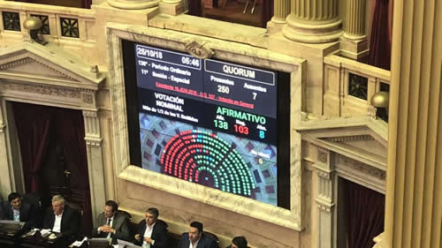

Real Chubut - Agencia de Noticias


Media sanción a favor del ajuste

El oficialismo cosechó 138 votos a favor mientras que el rechazo sumó 103 voluntades y 8 abstenciones. Fue un debate de algo más de 17 horas que incluyó una durísima represión en los alrededores del Congreso y que por un momento hizo tambalear la sesión. Ahora deberá el Senado debatir el proyecto del Gobierno.
El gobierno de Cambiemos logró luego de una extensa sesión, que incluyó una vez más la represión callejera, los votos necesarios para sancionar el Presupuesto 2019. Fueron 138 los diputados que acompañaron la iniciativa, en tanto que 103 los que se opusieron, 8 abstenciones y 7 ausencias. Una vez que se aprobó en general, el titular de la Cámara baja, Emilio Monzó, hizo aprobar en una sola votación todo el articulado a pesar del airado reclamo de la oposición. Ahora le tocará al Senado debatir y votar el proyecto que garantiza el ajuste que para la Casa Rosada es el único camino para enfrentar el proceso de estanflación que vive el país fruto del modelo económico que implementa el presidente Mauricio Macri desde que asumió en 2015.
La sesión, que se extendió por más de 17 horas, comenzó con nervios porque el oficialismo consiguió apenas el quórum que exige el reglamento. Lo hizo con 129 diputados, el número justo que se alcanzó gracias a la presencia de 13 diputados de Argentina Federal; el bloque Evolución Radical de Martín Lousteau; tres monobloques; y Unidad Justicialista, el espacio que corresponde a los representantes peronistas de San Luis. El gobernador de esa provincia, Alberto Rodríguez Saá, dijo estar “decepcionado” con estos diputados aunque no aclaró que responden a las órdenes de su hermano Adolfo con quien mantiene un enfrentamiento por su acercamiento al kirchnerismo.
A ese primer momento de nervios le sobrevino otro peor cuando el debate recién iniciado se interrumpió cuando llegó la noticia de que los efectivos de la Policía Federal y la Metropolitana distribuían sin discriminación balas de goma, palos y gases a todos los que participaron de la movilización que llegó hasta las inmediaciones del Congreso para repudiar el proyecto de déficit cero que impulsa el oficialismo. El reclamo de los legisladores de la oposición, sobre todo del kirchnerismo y del flamante interbloque Red por Argentina, exigiendo que Cambiemos detenga la represión y termine con las más de 20 detenciones que hasta ese momento se habían producido, no encontró eco entre el oficialismo. Ante esa falta de respuesta se desató una fuerte discusión que casi termina en algo más que un fuerte intercambio de palabras. Sin embargo, no pasó a mayores cuando el presidente de la Cámara baja, Emilio Monzó, hizo traer hasta el recinto al secretario de Seguridad porteño, Marcelo D’Alessandro, quien les aseguró a los opositores que "hemos tomado la decisión de finalizar con esta situación”. En rigor, cuando dijo "situación" en realidad estaba hablando de represión.
Superado este momento los discursos se sucedieron sin solución de continuidad pero con una particularidad y fue que ningún representante de oficialismo habló. Esta fue una decisión adoptada por la conducción de Cambiemos por considerar que no era conveniente que se produzcan conflictos con la oposición para mantener los acuerdos que habían alcanzado con algunos peronistas que forman parte del interbloque Argentina Federal. Estos legisladores se sumaron a esa estrategia y durante las 17 horas de debate no abrieron la boca.
En este sentido por Cambiemos solo habló Luciano Laspina en su rol de presidente de la comisión de Presupuesto. El discurso del diputado santafesino tuvo la particularidad de no hacer referencia a ninguno de los datos duros que incluye esta ley como el valor del dólar, la inflación prevista o los porcentajes y cifras de las inversiones que el gobierno presupuestó para el próximo ejercicio. Nada de eso se escuchó de boca de Laspina quien se limitó a señalar al gobierno de Cristina Kirchner como la responsable de la crisis que hoy padece la Argentina. Es más, señaló la raíz de los problemas económicos del Estado debe encontrárselo en el “descontrol fiscal” que provocaron los gobiernos kirchneristas y por eso aseguró que es imprescindible “equilibrar” las cuentas públicas. Eso sí, aseguró que se va a destinar el dinero necesario para contener los problemas sociales que puedan producirse.
El titular de la comisión de Presupuesto no dijo, por ejemplo, que el proyecto prevé para 2019 una inflación interanual del 23 por ciento; un dólar promedio a 40,10 pesos; una caída del 0,5% del PBI y un crecimiento de las exportaciones del 21% interanual. Laspina no dijo nada de eso por aquello de que el año pasado y a poco de aprobar el presupuesto, el Gobierno cambió todas las metas prevista dejando a la ley obsoleta.
Entre el discurso de Laspina y la siguiente exposición de un oficialista transcurrieron algo más de 14 horas cuando en el momento de los cierres por bloque habló el cordobés Mario Negri (Córdoba). La estrategia del oficialismo fue no hacer olas, evitar cualquier otro inconveniente para cuidar los votos de diputados opositores que se habían comprometido, vía orden de sus gobernadores, respaldar la iniciativa.
A su turno, Negri reconoció que la decisión de aprobar cuanto antes el proyecto y acortar su discusión en la comisión fue “porque estamos en una crisis. Ojalá podamos salir bien, en política hay que optar”. Es más, indicó que había una necesidad de dar señales que permitan obtener más estabilidad. “No tenerlo (el Presupuesto) hubiese sido una derrota, que es lo que querían algunos esta noche, no cabe ninguna duda, y no lo pudieron lograr”, chicaneó por primera vez.
El diputado radical reconoció la existencias de negociaciones para obtener los votos necesarios y para eso señaló que "se tuvieron que incorporar impuestos que no queríamos, para conseguir más recursos”. Para Negri eso representó la conformación de "un nuevo federalismo fiscal”. Luego recurrió a la estrategia macrista de sostener que se hizo mucho pero también se cometieron errores en la política monetaria y fiscal. Más tarde agregó que a pesar de reconocer cierta debilidad del gobierno han decidido "no subirnos arriba de una tribuna estudiantil a hacer discursos facilistas… ¡Se fumaron el país y vienen a darnos recomendaciones ahora!”, chicaneó por segunda vez.
Negri también admitió que “no nos ha ido bien con los programas anti-inflacionarios” pero de inmediato buscó socios en la desgracia al sostener que el kirchnerismo también había tenido problemas con la inflación. Por último aseguró que "debemos salir de otro cepo que nos paraliza: la mediocridad de los que piensan que es posible volver al país que dice que hicieron feliz, pero que lo pudieron hacer porque llegaron al 2015 en base a lo que hubo en 2003, y no hay más 2003 para gastarse en adelante el futuro, porque las condiciones del mundo no dan. Muchachos, piensen otro camino”, chicaneó por tercera y última vez.
El diputado radical fue el último antes de la votación pero antes habló, entre otras, Graciela Camaño como presidenta del bloque del Frente Renovador. La legisladora no tuvo piedad al considerar que el discurso de Laspina fue "por lo menos flaco" para luego asegurar que Cambiemos "gobernó durante dos años con un esquema que no podía funcionar y ahora estamos enfrentados a la peor de las realidades". Camaño anticipó que la crisis actual representa "el fin del relato, la fantasía y el marketing de los consultores políticos caros. Nunca hubo lluvia de inversiones, el gradualismo pasó sin pena ni gloria, la convergencia de variables nunca convergieron. El relato del gobierno de Macri que intenta centrar el origen de todos los males del presente en el gobierno anterior. El único problema que teníamos era el gobierno K y cuando ellos asumieran se iba a resolver todo. la población y el mundo iban a confiar. Iban a sobrar dólares y comenzarían las inversiones pero todo fue una invención".
Agustín Rossi inició su discurso recurriendo a la ironía: "Tantas veces me dijeron que éramos una escribanía del Gobierno y ahora resulta que ustedes son también una escribanía pero del Fondo Monetario Internacional. Ahora somos el país que más le debemos al Fondo. Ese es el puesto número uno que ocupamos", dijo y deslizó una sonrisa frente a un silencio sepulcral del oficialismo. El jefe del bloque del FpV-PJ recordó que en 2001, previo a la crisis de ese fin de año, el entonces ministro de Economía, Domingo Cavallo sostenía que era preciso "reconocer la realidad, que no hay financiamiento, se acabó el crédito y tenemos que ir al déficit cero. Es claramente lo que está sucediendo ahora". Luego recitó una antigua declaración de respaldo a ese proyecto de déficit cero cuya autora resultó ser Elisa Carrió. Rossi aseguró que "todos sabemos cómo terminó esa etapa de déficit cero y también cada uno de los programas de ajuste que se aplicaron. Todos terminaron con crisis", dijo y le preguntó por qué creen que en esta oportunidad va a salir bien: "Si le fue mal a (Alvaro) Alsogaray, (Adalbert) Kireger Vasena, (José Alfredo) Martínez de Hoz, Cavallo y (José Luis) Machinea, por qué creen que a ustedes les irá bien?", dijo sin esperar una respuesta.
La ley de Presupuesto suele ser clave para un gobierno y la cantidad de votos que obtiene es también una muestra del poderío que mantiene. El ajustado número que alcanzó en esta oportunidad da cuenta de una caída en la capacidad de injerencia que tiene el Gobierno sobre bloques opositores. Por caso, cuando Cambiemos llevó al recinto su primer presupuesto a fines de 2016, estuvieron presentes 239 diputados y obtuvo 177 votos a favor, 58 en contra y 4 abstenciones. Un año más tarde, cuando aprobó en Diputados el presupuesto del actual ejercicio en las bancas se sentaron 230 diputados y el oficialismo conquistó 165 voluntades, unos 64 diputados lo rechazaron y solo un legislador se abstuvo.
Ahora será el turno del Senado. El oficialismo confía en poder sancionar la estratégica norma fruto de la muy buena relación que mantienen con el bloque que conduce Miguel Angel Pichetto.
Fuente: Pagina 12